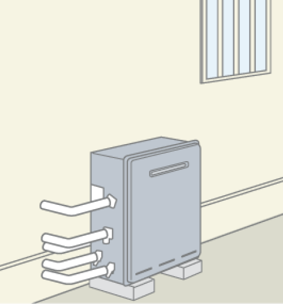

給湯器の選び方のステップ
ガス給湯器は、家庭や生活スタイルに合わせてさまざまな種類があります。浴室やキッチンなどの水まわりで快適さや利便性を左右する重要な機器です。種類が多くどれを選べばよいか迷うこともありますが、こちらではガス給湯器の交換や取り付けを考える際の選び方のポイントを紹介します。
型式、ラベル写真があればすぐに選べます！
お住まいのタイプを確認する
ガス給湯器の取り付け方法は、設置場所が戸建てかマンションかによって異なるため、商品を選ぶ前に設置予定の場所を確認する必要があります。
-
戸建ての場合、ガス給湯器は壁掛けタイプと据置タイプの二つに分かれます。据置タイプには、屋外据置タイプと浴槽隣接タイプの二つがありますので、現在お使いの給湯器をご確認ください。
-
屋外壁掛タイプ
給湯器の下部から配管が出ています。壁掛けタイプのガス給湯器は、屋外の壁に取り付けて設置するタイプの給湯器です。
-
屋外据置タイプ
 給湯器の側面から配管が出ており、浴槽にはひとつの穴があります。給湯器は地面やブロックの上に置かれています。
-
浴槽隣接設置タイプ
浴槽には2つの穴があり、上下に2つの穴からお湯が循環します。
浴槽のすぐそばに設置するタイプは、床に据え置きされます。
-
-
マンションの場合、いくつかの種類があります。まず、PS（パイプシャフトまたはパイプスペース）の中に設置されるのが「PSタイプ」です。これは、廊下などにガスメーターやその他の設備が収められている空間に取り付けられます。扉の中に設置されているため、外からガス給湯器が見えない場合もあります。また、ベランダの壁に取り付けられ、本体の下から配管が出ているものは「ベランダ壁掛タイプ」となります。
-
PS標準設置タイプ

扉は付いていません。マンションの玄関横にあるパイプスペース（PS）に取り付けられているタイプ。
-
PS扉内設置タイプ
扉が付いているタイプです。マンションの玄関横にあるパイプスペース（PS）に設置されています。
-
ベランダ壁掛けタイプ
給湯器の下部から配管が出ています。給湯器はベランダなどの壁に取り付けられます。
-


今お使いのガス給湯器の号数はいくつですか？
ガス給湯器の号数とは、「水温に25℃を加えたときに、1分間に出るお湯の量（リットル）」を指します（都市ガスとプロパンガスの両方で同じです）。例えば、1分間に24リットルのお湯が出せる給湯器は24号と呼ばれます。号数が大きいほど、一度にたくさんのお湯を使えますが、ご家族の人数やお湯の使い方に合わせて選ぶ必要があります。現在の給湯器でお湯の量に不足を感じていない場合は、同じ号数の給湯器をお勧めします。
今使っている号数の確認
- 16号の例
- RUF-E1616AW、GQ-1637WX、FH-E168FA
- 20号の例
- RUF-E2007AW、GQ-2037WX、FH-E208FA
- 24号の例
- RUF-E2406AW、GQ-2437WX、FH-E248FA
-
16号が最適です!
単身世帯、2人家族など
-
20号が最適です!
2～3人家族など
-
24号が最適です!
4人以上の家族など
ガス給湯器の号数について詳しい説明はこちら
追い焚き機能があるか確認する
ガス給湯器の種類には大きく2つあります。1つは追い焚き機能付きのタイプで、もう1つは追い焚き機能なしのタイプです。追い焚き機能付きのタイプには「ふろ給湯器」と「給湯暖房熱源機」の2つがあります。一方、追い焚き機能なしのタイプには「給湯専用器」と「 給湯＋高温水供給式」の2つがあります。ガス給湯器を交換する場合は、現在お使いの種類と同じものを選択する必要があります。以下の内容を確認してみましょう。
追い焚き機能付き
-
ふろ給湯器
ふろ給湯器は、給湯＋自動湯はりや追い焚きの機能を備えています。さらに、オートタイプとフルオートタイプの2つに分かれます。オートタイプに「追い焚き配管自動洗浄」「自動たし湯」「入浴検知自動沸きあげ」の機能が追加されたものがフルオートタイプとなります。
-
ガス給湯暖房熱源機
ガス給湯暖房熱源機は、給湯＋自動湯はりや追い焚き＋温水暖房の機能を備えています。さらに、オートタイプとフルオートタイプの2つに分かれます。オートタイプに「追い焚き配管自動洗浄」「自動たし湯」「入浴検知自動沸きあげ」の機能が追加されたものがフルオートタイプとなります。
給湯器のオートとフルオートは何が違うの？
追い焚き機能なし
-
給湯専用器
給湯専用器は、キッチンやシャワーなどの給湯の機能を備えています。このタイプの機器は、蛇口からお湯を出すことができますが、お風呂の湯はりは手動で行う必要があります。
-
給湯＋高温水供給式
給湯＋高温水供給式は、給湯専用器＋自動湯はり機能を備えています。お湯をたし湯することができ、湯はりまでを行います。ただし、追い焚き機能はありません。
暖房機能付き（床暖房、浴室暖房など）
ガス給湯暖房熱源機は、お風呂の湯はり、おいだきと給湯、温水暖房の機能を備えています。キッチンやお風呂の給湯だけでなく、床暖房や浴室暖房乾燥、温水ルームヒーターなど、住まい全体を暖めることができます。